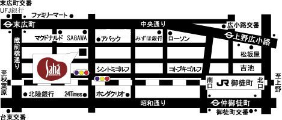
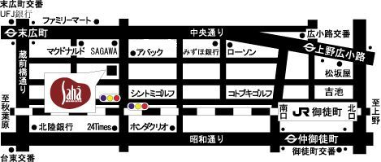

Щедрий вечір 2007
Щедрий вечір 2007
Запрошуємо усіх на свято Щедрого Вечора, що відбудеться 13 січня 2007 року о 16:00 в Live Performance『Saha』
Програма
| | Частина перша | １６：３０～１７：００ | Виступ Кувата Морійоші та Накамура Хацуе
| | Частина друга | １７：００～１７：３０ | Знайомство з Україною (слайд-шоу, тощо)
| | Частина третя | １７：３０～１８：００ | Виступ Оксани Степанюк
| | Частина четверта | １８：００～２０：００ | Час спілкування
|
Організатори: Товариство японсько-українських культурних зв'язків та Краяни
Виконавці :
- Кувата Морійоші(гітара) – сольні концерти у Львові
- Накамура Хацуе(співачка, сопрано) – виступи в Києві на Днях Японської Культури, артист Маріінського театру в Росії
- Оксана Степанюк(бандура, колоратурне сопрано) – переможець міжнародних музичних конкурсів, неодноразові виступи на телебаченні і в урядових установах
Час :13 січня (субота) 2007 року о 16:00, вхід з 15:30
Місце:Live Performance『Saha』〒101-0021? Tokyo, Chiyoda-ku, Soto-Kanda? 5-5-5, Numata Bld. B1
TEL: 03-3837-7411
2 хв. пішки від станції метро Suehirochyou (Ginza Line), 7 хв. від JR станції Okachimachi,
7 хв. від JR станції Акіхабара, 5 хв. від станції метро Yushima (Chiyoda Line),
6 хв. від станції метро Naka-Okachimachi? (Hibiya Line)
Вартість квитків : 6000 єн
Квитки/запитання :
|
ニューイヤーライブパーティー２００７
ウクライナの旧正月を祝おう
1月13日はウクライナの旧正月。日本ではあまり知られていない国、ウクライナ。ウクライナはロシア発祥の地。ロシア料理として知られるボルシチはウクライナ料理。日本の食卓でもおなじみのロールキャベツもウクライナからやってきました。日本との文化的共通点もあります。武士道とコサック魂、琵琶法師とコブザール……。
ライブのあとはウクライナの旧正月をウクライナ人たちとウクライナ料理を食べながら祝いましょう。きっとウクライナが身近になり、そして大好きになることでしょう！
翌日の1月14日は茶会を企画中。御点前は「キエフ特別茶会2005」を開催した表千家教授・大東冨美江さん。乞うご期待！
日本ウクライナ文化交流協会
会長 小野 元裕
出演：
| | 桑田守喜 | （ギター奏者。キエフ、リヴィウでリサイタルを多数開きウクライナ人の心をつかむ）
| | 中村初恵 | （ソプラノ歌手。日本文化週間inキエフに出演し好評を得る。露国立マリンスキー劇場在籍）
| | オクサナ・ステパニュック | （バンドゥーラ奏者、コルラトゥーラソプラノ。首相官邸晩餐会でも演奏）
| | 日時： | ２００７年１月１３日（土） １５：３０開場 １６：００開演
| | 会場： | Live Performance『Saha』〒101-0021東京都千代田区外神田5-5-5沼田ビルB1 TEL03-3837-7411? 地下鉄銀座線「末広町駅」徒歩2分、ＪＲ「御徒町駅」徒歩7分、「秋葉原駅」徒歩7分、千代田線「湯島駅」徒歩5分、日比谷線「仲御徒町駅」徒歩6分、新宿・渋谷から30分 銀座・上野から10分、東京駅から15分
| | 入場： | 一般６０００円、会員４０００円（日本ウクライナ文化交流協会）
| | 主催： | 日本ウクライナ文化交流協会、Krayanyクラヤニ（在日ウクライナ人コミュニティ）
| | 申込： | 日本ウクライナ文化交流協会関東支部 http://www.geocities.jp/nichiubunka/
| TEL 090-4093-8935 FAX 047-463-2560 Mail cbm03330@nifty.com
|
プログラム
| | 第一部 | １６：３０～１７：００ | ギターとソプラノによる協奏ライブ
| | 第二部 | １７：００～１７：３０ | ウクライナ勉強会（スライドショー他）
| | 第三部 | １７：３０～１８：００ | オクサナ・ステパニュック ミニライブ
| | 第四部 | １８：００～２０：００ | 交流パーティー
|
|
 

11 лютого 2007 року в Фукуі – «День України в Хокуріку»
![[ Japanese flag ]](../images/jp.png)

![[ Ukranian flag ]](../images/uk.png)